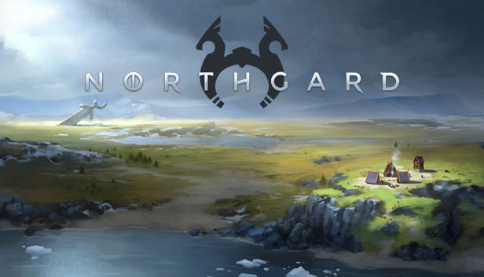
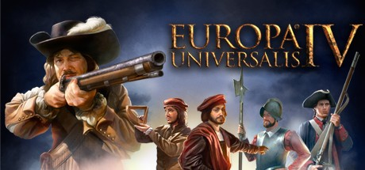

Gry Strategiczne

Frostpunk

Akcja Frostpunka toczy się w alternatywnej wersji XIX wieku, w której na Ziemi zapanowała nowa epoka lodowcowa. Garstka ocalałych, nad którą przejmujemy kontrolę, szuka schronienia w pobliżu parowego generatora ciepła – chcąc utrzymać ostatni bastion ludzkości, cała społeczność musi dostosować się do nowej, mroźnej rzeczywistości.
Northgard

Strategia czasu rzeczywistego osadzona w fantastycznym świecie wikingów oraz mitologii skandynawskiej. W Northgard dowodzimy grupą nordyckich wojowników, którzy po wielu latach żmudnej eksploracji natrafili na owiany tajemnicą, bogaty ląd. Mechanika rozgrywki w grze Northgard czerpie sporo z klasycznych RTS-ów
Europa Universalis IV

Wzorem wcześniejszych odsłon cyklu, w Europa Universalis IV gracz wciela się w rolę szarej eminencji, która kieruje rozwojem wybranego kraju na przestrzeni wieków. Tym razem do wyboru jest ponad 250 nacji zamieszkujących praktycznie cały glob. Zależnie od scenariusza długość historycznego okresu gry może wynosić nawet blisko 400 lat (w kampanii głównej).
FTL: Faster Then Light

Strategia osadzona w realiach sci-fi opowiadająca o samotnym statku próbującym uciec przed olbrzymią wojenną armadą. Trasę przelotu planujemy w trybie turowym, a walki rozgrywane są w czasie rzeczywistym. Ponadto musimy zarządzać załogą i ulepszać naszą jednostkę.
Crusader Kings II: Mroczne Wieki

Akcja gry rozpoczyna się w roku 1066 i pozwala graczom na wcielenie się w chrześcijańskiego szlachcica (hrabiego, księcia, cesarza lub króla), którego zadaniem będzie przeprowadzenie własnej dynastii przez chaotyczne czasy europejskiego średniowiecza.
Poznaj najlepasze gry według mnie na pc. Wszystkie prawa zastrzeżone ©